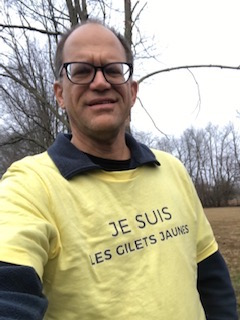

About Narrative Nonsense
After the 2016 election I started to explore
alternate sites on the web to find out what is really going on.
This got me interested in joining public discourse regarding
current events with historical context. And voila,
narrative_nonsense was born after a little brainstorming.
The idea is to educate people and draw out the weak
foundations of the false narratives
that are commonly voiced within the government and the media.
There is a satisfaction and a subtle empowerment when one
starts to notice the powerful using tricks of
influence and spin in narratives that are voiced daily.

I have a crazy idea that if more people become more educated critical thinkers,
we might stop the very powerful from gaining more at the average person's expense.
The majority may stay away from the news and real information often is
presented in confusing ways, or is ignored. But what would it take for regular
people to start fighting back? Not by following some figurehead, hero
leader, party, government or "expert" nor by subscribing to the
'acepted' narrative without questioning it.
This site is a step toward bringing
insight, critical analysis, heart and humor into a presentation that will
let you click and discover hopefully in a tasteful and well-pace way,
to handle difficult material that too often is about
the failings of the human spirit via planners who set up wars and tragedies for
regular people to go to the front lines and carry them out. Most people want
a world that works for everyone, not just for an elite few, and most people care.
My goal is to build a discourse that will somehow cultivate people's capacity to
employ human spirit with wisdom. I hope you find this site
meaningful and enjoyable. William Spencer March 23, 2019